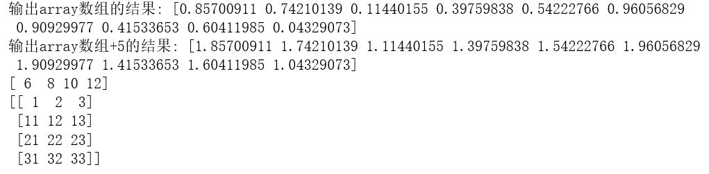

在实际开发过程中，当需要获取一个连续列表时，可直接使用range(3,10)，但是如果获取该列表中每个数据的平方时，通常可以通过for循环来解决这个问题，如下面的方法一。由于python中存在内置函数，使用循环过于繁琐，python中的列表生成式可以一句语句代替循环生成的list。
def cal(a):
return a**2+3
#方法一（循环）：
lst=[]
for i in range(10):
lst.append(cal(i))
#方法二（列表生成式）：
lst=[cal(i) for i in range(10)]在使用列表生成式时，可以进行条件筛选，例如 [i for i in range(10) if i%2==0] ，通过这种方式来筛选列表中的偶数。
也可以进行双重循环，例如 [i*j for i in range(1,5) for j in range(6,9)] 。通过该循环获取数据乘积的列表。
python通过键盘输入数据，数据类型为字符串类型， a=input() ，当需要输入多个数据时，可通过空格等字符进行区分， b=a.split() ，如果是通过其余字符进行区分的，在split()中插入指定字符。也可以通过 a.split('',1) 来控制分解次数。
当需要输入的为整型时，可以使用map()函数进行数据类型的转换。map()会根据提供的函数对指定序列做映射。 c=list(map(int,input().split())) 得到一个整型的列表，map会将输入切分之后的每个数据进行int类型的转换。
也可以对列表进行自动解包，例如，当输入的数据切分之后为三个值时，将分解之后的每个值分别赋予a、b、c， a,b,c=list(map(int,input().split())) 。
（1）Python中 swapcase() 方法用于对字符串的大小写字母进行转换。 str1.swapcase() 。
（2）Python中获取所有大小写字母。
（3）判断是否为字母通过 a.isalpha() ，输出的结果为一个Ture或False。
import string
str1='adW7djk25RES'
#大小写字母相互转换
print(str1.swapcase())
#小写字母
lower=string.ascii_lowercase
#大写字母
upper=string.ascii_uppercase
print(lower,upper)
#字母的判断并获取非字母数量
print(sum([not a.isalpha() for a in str1]))
广播(Broadcast)是 numpy 对不同形状(shape)的数组进行数值计算的方式， 对数组的算术运算通常在相应的元素上进行。
import numpy as np
array = np.random.rand(10)#随机生成一个数组
print(array)
#广播，5与一维数组中的每个元素相加
print(array+5)
#两个一维数组相加，对应位置相加
array1 = np.array([1,2,3,4])
array2 = np.array([5,6,7,8])
arraysum = array1 + array2
print(arraysum)
#两个不同维度的进行相加
a = np.array([[ 0, 0, 0],[10,10,10],[20,20,20],[30,30,30]])
b = np.array([1,2,3])
print(a + b)输出结果如下：

numpy的相关计算
import numpy as np
lst=range(1,5)
lst_mean=np.mean(lst)#均值
lst_var=np.var(lst)#方差
lst_std=np.std(lst)#标准差
lst_prod=np.prod(lst)#连乘积
lst_cumsum=np.cumsum(lst)#累积和
lst_cumprod=np.cumprod(lst)#累积积
"pass" if score>60 else "fail"
#相当于下面多行语句
if score>60:
print("pass")
else:
print("fail")
fabs() 方法返回数字的绝对值，fabs()是不能直接访问的，需要导入 math 模块，通过静态对象调用该方法。
import math
print(math.fabs(-45))
True在计算中相当于1，False在计算中相当于0。3+True=4，可直接用于计算。
（1）给定一个字符串，然后将其翻转，逆序输出。
（2）使用 reversed()，然后使用 join() 方法用于将序列中的元素以指定的字符连接生成一个新的字符串。
s='ABCDabcd'
u=s[::-1]
print(u)
t=''.join(reversed(s))
print(t)
for 实例中使用了 break 语句，break 语句用于跳出当前循环体。对于不满足循环条件的，可以通过else进行其他条件操作。
sites = ["Baidu", "Google","Runoob","Taobao"]
for site in sites:
if site == "Runoob":
print("啦啦啦!")
break
print("循环数据 " + site)
else:
print("没有循环数据!")在 while … else 在条件语句为 false 时执行 else 的语句块：
count = 0
while count < 5:
print (count, " 小于 5")
count = count + 1
else:
print (count, " 大于或等于 5")